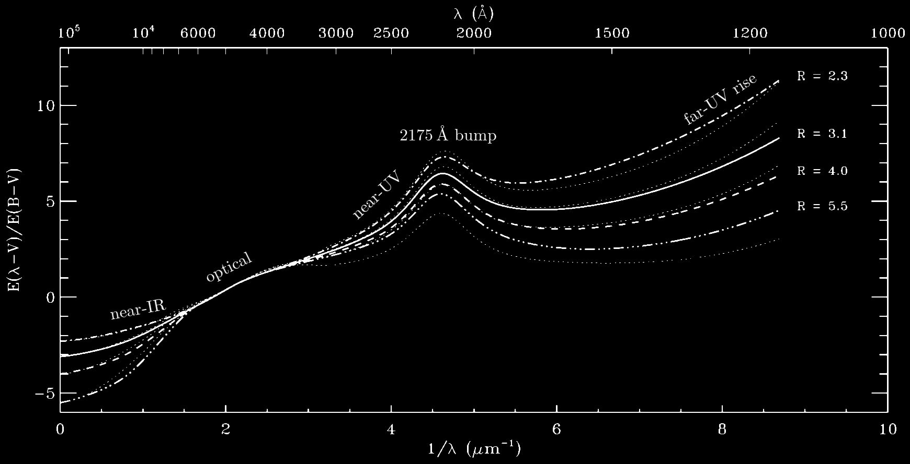
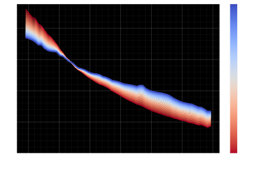
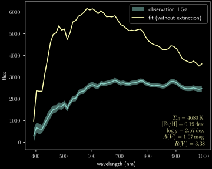
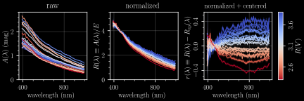
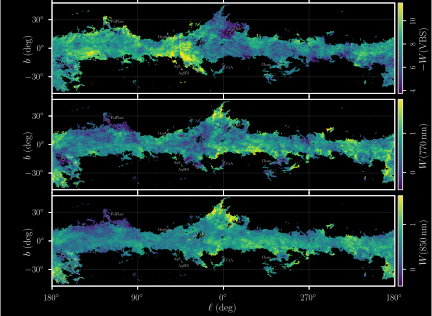

Dust beyond R(V)
Heidelberg-Harvard Star Formation 2024
3 December 2024
Gregory M. Green, Xiangyu Zhang (张翔宇), Ruoyi Zhang (张若羿)
(MPIA, Heidelberg)

The Gaia revolution
Gaia BP/RP spectrophotometry
(“XP spectra”)
- $R \sim 50-160$
- slitless spectroscopy
- optical (330—1050 nm)
- 220 million stars (in DR3)
Slitless spectra
(ESA/Euclid/Euclid Consortium/NASA, CC BY-SA 3.0 IGO)
Example XP spectra

Example XP spectra

Example XP spectra

Dust mapping
Dust mapping
Universal extinction curve: $A\left(\lambda\right) / A\left(\lambda_0\right)$.

Dust mapping
Universal extinction curve: $A\left(\lambda\right) / A\left(\lambda_0\right)$.

Dust mapping
R(V) varies.
Dust mapping
Dust mapping
Dust mapping
Varying extinction curve.
Is there information in the extinction curve beyond R(V)?
Green, Zhang, & Zhang (arXiv:2410.22537)
Empirical extinction curves
Zhang & Green (2024) infers parameters of stars and foreground dust for ~130 million stars.

Empirical extinction curves
Zhang & Green (2024) infers parameters of stars and foreground dust for ~130 million stars.
Empirical extinction curves
Zhang & Green (2024) infers parameters of stars and foreground dust for ~130 million stars.

Empirical extinction curves
Zhang & Green (2024) infers parameters of stars and foreground dust for ~130 million stars.

Empirical extinction curves
Zhang & Green (2024) infers parameters of stars and foreground dust for ~130 million stars.

Empirical extinction curves
Zhang & Green (2024) infers parameters of stars and foreground dust for ~130 million stars.

Component decomposition of extinction curves
Component decomposition of extinction curves
Component decomposition: $$ r\left(\lambda\right) = \sum_i b_i \, g_i\!\left(\lambda\right) \, . $$
Component decomposition of extinction curves
Component decomposition: $$ r\left(\lambda\right) = \sum_i b_i \, g_i\!\left(\lambda\right) \, . $$
$$ g_i\left(\lambda\right) = \mathrm{basis\ function}\ i \, . \\ b_i = \mathrm{coefficient}\ i\ (\mathrm{different\ for\ each\ star}) \, . $$
Component decomposition of extinction curves
Component decomposition: $$ r\left(\lambda\right) = \sum_i b_i \, g_i\!\left(\lambda\right) \, . $$
$$ g_i\left(\lambda\right) = \mathrm{basis\ function}\ i \, . \\ b_i = \mathrm{coefficient}\ i\ (\mathrm{different\ for\ each\ star}) \, . $$
Find basis functions that minimize $\chi^2$ of all “high-quality” extinction curves.
Component decomposition of extinction curves
Component decomposition: $$ r\left(\lambda\right) = \sum_i b_i \, g_i\!\left(\lambda\right) \, . $$
$$ g_i\left(\lambda\right) = \mathrm{basis\ function}\ i \, . \\ b_i = \mathrm{coefficient}\ i\ (\mathrm{different\ for\ each\ star}) \, . $$
Find basis functions that minimize $\chi^2$ of all “high-quality” extinction curves.
Decompose 24M “medium-quality” extinction curves.
Component decomposition of extinction curves

Component decomposition of extinction curves

“Dust-like” spatial patterns in lowest-order components

“Gaia-like” spatial patterns in higher-order components

Individual extinction features
Measuring equivalent widths of features
Features at 770 and 850 nm, and "very broad structure" (VBS).
770 nm feature discovered by Maíz Apellániz+(2021).
850 nm feature is new.
Measure equivalent widths in ~24 million extinction curves.
Sky maps of equivalent widths
Correlations between feature strengths
Strong (but not perfect) correlations with R(V).
Deviations from this correlation have spatial structure.
Deviation of feature strength from expectation given R(V)

Feature profiles

Feature profiles
Both features are far wider than any DIB.
770 nm $\lambda_0$ and FWHM agree with Maíz Apellániz+(2021).